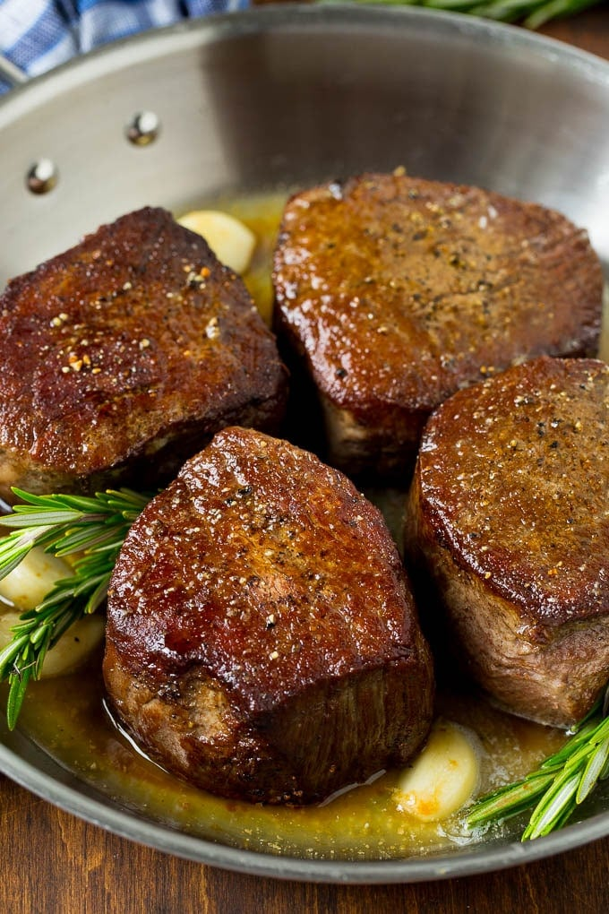

Filet Mignon

The Cadillac of Cuts!
The most tender piece of meat you'll ever put in your mouth. This delicacy goes for upwards of $100 in steakhouses around the world, with this recipe, you'll never want to have it anywhere else!
Ingredients
- 6 oz filet mignon
- Salt
- Black Pepper
- Extra Virgin Olive Oil
- Butter
- Thyme
The Steps
- Preheat oven to 400 F
- Season steak with salt and pepper, all sides
- Heat oil in an oven safe pan until ripping hot and add steak
- Sear steak, approx 2-3 mins per side
- Once browned remove from heat and add your butter and thyme to the pan and baste steak with melted butter for 30 seconds
- Place pan in oven and let cook 3-5 minutes to desired liking
- Once done, remove pan and place steak on a plate, tent with tinfoil and let rest 5-10 minutes
- Top with left over butter and serve
Return Home